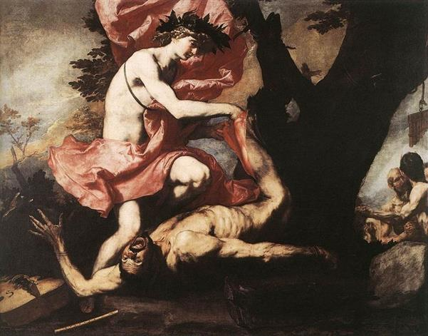

Trong những hành động trừng phạt kẻ bạo ngược kiêu căng thì có lẽ hành động Apollon trừng phạt tên Silène Marsyas là khủng khiếp nhất, tàn bạo nhất. Marsyas là một Silène, nghĩa là có hai sừng dê và lạ hơn nữa, lại có đuôi như đuôi dê hoặc đuôi ngựa. Chân của Silène cũng là chân dê. Những Silène là những vị thần tùy tùng của thần Rượu nho-Dionysos, có khi được gọi bằng một tên khác là Satyre. Marsyas là một trong những Silène của Dionysos.
Chuyện xảy ra phải kể nguồn gốc từ nữ thần Athéna. Nàng là nữ thần Trí tuệ và Nghệ thuật, nghĩa là của sự sáng tạo. Chính nàng là người sáng tạo ra cây sáo có tiếng réo rắt, véo von nghe như tiếng chim sơn ca, bạch yến, hoàng yến. Nhưng sau khi sáng tạo xong cây sáo và thổi thử ít bài nàng liền vứt ngay nó đi và nguyền rủa: “Kẻ nào nhặt chiếc sáo này sẽ bị trừng phạt tàn nhẫn”. Tại sao mà Athéna lại có hành động khó hiểu đến như thế? Nguyên do là nữ thần nhận thấy khi mình thổi sáo thì khuôn mặt mất tự nhiên đi. Để có được những âm thanh kỳ diệu, nữ thần phải chúm môi, phồng má... nghĩa là nữ thần mất hẳn đi vẻ đẹp tuyệt diệu của nữ thần. Và như thế thì thật là tai họa. Nữ thần Athéna vứt cây sáo đi nguyên do là như thế. Nhưng Marsyas lại nhặt được cây sáo. Lão già này chẳng biết đến lời nguyền của Athéna. Lão đưa sáo lên miệng và mầy mò tập thổi. Lão chẳng quan tâm đến việc khuôn mặt mình mất tự nhiên đi, xấu đi khi thổi sáo vì lão vốn chẳng đẹp đẽ gì. Cuối cùng Marsyas thổi được sáo và thổi sáo rất hay, ngày càng hay, hay đến nỗi khi tiếng sáo Marsyas cất lên là chim chóc đang kiếm ăn dừng lại lắng nghe, hươu nai đang gặm cỏ trong rừng ngừng ăn, nghênh nghênh chiếc cổ cao lên, dỏng tai tìm nghe tiếng nhạc. Có con suối nghe tiếng sáo Marsyas lại ngỡ tiếng nói thủ thỉ của bạn mình. Còn rừng cây nghe tiếng sáo của Marsyas như uống lấy mọi âm thanh. Người ta bảo chúng muốn học thuộc những làn điệu Marsyas để khi gió nổi lên là cùng hòa tấu, để truyền dạy lại cho mọi người biết sử dụng một nhạc cụ đơn giản mà lại khá hay đến như thế. Danh tiếng của Marsyas lừng lẫy đến nỗi lão sinh ra kiêu căng. Lão tự hào về tài năng của lão song lại mất tỉnh táo đến nỗi cho rằng không một thứ đàn nào có thể hay bằng cây sáo, không một ai có thể biểu diễn một nhạc cụ nào hay bằng lão thổi cây sáo. Lão nảy ra ý định ngông cuồng thách thức vị thần bảo trợ cho Nghệ thuật và Âm nhạc là Apollon thi tài. Vị thần này chấp nhận ngay cuộc thi đấu. Các nàng Muses và nhà vua Midas trị vì trên đất Phrygie, được mời làm ban giám khảo.
Kẻ thất bại, thua cuộc trong cuộc thi này phải nộp mình cho người chiến thắng toàn quyền sử dụng. Cuộc đo tài diễn ra. Thần Apollon với cây đàn cithare biểu diễn trước. Khó mà có thể diễn tả được hết phong thái biểu diễn tài hoa chinh phục lòng người của Apollon. Khoác một tấm áo choàng may cực kỳ đẹp đẽ, Apollon cầm cây đàn bước ra đĩnh đạc mà vẫn không mất đi vẻ duyên dáng, tươi tắn. Những tiếng đàn của thần bật lên thánh thót như rót vào lòng mọi người. Ngón tay của thần mềm mại, uyển chuyển lướt đi trên những dây đàn tưởng chừng như những bước chân của các nàng Muses đang xoay, đang lướt đi trên thềm vàng, thềm bạc của cung điện Olympe. Còn lão Marsyas, con người thô thiển của rừng rú, quê mùa với cây sáo, dù có trổ hết tài năng cũng không thể nào điêu luyện bằng một vị thần đã từng chỉ huy, dạy bảo cho các nàng Muses xinh đẹp, đầy tài năng, con của đấng phụ vương Zeus. Ban giám khảo bỏ phiếu kín để quyết định người thắng cuộc. Các nàng Muses bỏ cho Apollon, còn vua Midas bỏ cho Marsyas. Như vậy là Apollon thắng. Vòng lá nguyệt quế trên vầng trán cao của vị thần dường như lại thắm hơn.
Marsyas quỳ xuống nộp mình trước mặt vị thần Apollon. Mặc dù đã giành được thắng lợi vẻ vang song Apollon vẫn không nguôi được nỗi tức giận với Marsyas đã ngạo mạn, kiêu căng dám thách thức một vị thần Olympe thi tài. Thần treo Marsyas lên một cây thông rồi lột da lão! Thật khủng khiếp! Tấm da của Marsyas treo trên cây ở gần vùng Célène đất Phrygie như để làm gương cho những kẻ dám to gan lớn mật thách thức cả với thần thánh, muốn hơn cả thần thánh. Tấm da Marsyas thật kỳ lạ. Người ta kể mỗi khi có tiếng sáo từ đất Phrygie nổi lên, bay đến thì tấm da Marsyas lại chuyển động xốn xang như rung động vì tiếng sáo. Nhưng hễ khi nghe thấy tiếng đàn cithare không biết từ đâu bay đến thì tấm da lại thẳng đưỡn ra, không mảy may chuyển động. Sau này hình như Apollon có hối hận vì hành động trừng phạt quá tàn nhẫn của mình. Vì thế có chuyện kể, Apollon đã biến Marsyas thành một con sông và trao chiếc sáo của Marsyas cho thần Rượu nho-Dionysos.

Apollon lột da tên Marsyas